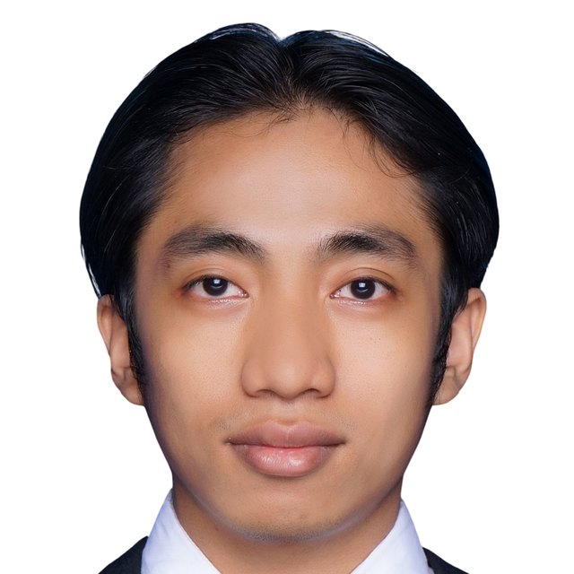

M.S. in Electronic and Computer Engineering
National Taiwan University of Science and Technology (NTUST) · Taipei, Taiwan
- Advisor
- Prof. Poki Chen

M.S. student in Electronic and Computer Engineering
Analog/Mixed-Signal IC Design
Master's student at National Taiwan University of Science and Technology (NTUST), specializing in analog and mixed-signal IC design. Research focuses on ultra-low-power time-domain SAR ADCs. Experience spans analog IC design, open-source and commercial EDA flows, verification, and tapeout-oriented projects.
10-bit Time-Domain SAR ADC for Biomedical PPG Acquisition · Tiny Tapeout ttsky25b (SkyWater 130 nm (Sky130)) — design metrics
Current research
14-bit time-domain SAR ADC for ultra-low-power applications
National Taiwan University of Science and Technology (NTUST) · Taipei, Taiwan
Institut Teknologi Sepuluh Nopember (ITS) · Surabaya, Indonesia
Analog IC Laboratory, NTUST · Taipei, Taiwan
Semiconductor Flagship Research Program, ITS · Surabaya, Indonesia
National Taiwan University of Science and Technology · Taipei, Taiwan
Microelectronics and Embedded Systems Laboratory, ITS · Surabaya, Indonesia
Tapeout completed
Fabricated
Passed tapeout review; fabrication did not complete after vendor shutdown
Publication
M. T. Huda, A. N. Irfansyah
All publications on Google Scholar
Awards
FPMA tapeout completed in GF180MCU
Passed tapeout review phase
Non-invasive hemoglobin detector using embedded AI on STM32 for anemia prediction in patients with systemic lupus erythematosus
Analog & mixed-signal
EDA — open source
EDA — commercial
Design & verification
Programming & HDL
PDK experience
Lab equipment
Languages